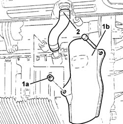

1084B42 Engine oil return pipe to turbocharger
- Path
- Procedures > 10 ENGINE > 1084 ENGINE LUBRICATION > 1084B ENGINE OIL LUBRICATION CIRCUIT > 1084B42 Engine oil return pipe to turbocharger
- Kind
- repair procedure (removal / refitting; the operation number is the code)
- Applies to
- engines: 2.4 JTD 10V; all production periods
- Interactive page
- https://sloeber94.github.io/elrnDB-lThss/en/#/105125
Applies to: all engines; all production periods
 Removing
Removing
 Refitting
Refitting- Position the vehicle on a lift.
- Raise the vehicle.
See in Op. 7055A54 NO. PLATE HOLDER - R.R.
1. Undo the nut and the bolt (1a) and remove the metal protection (1b) for the return pipe.
2. Remove the crankcase return pipe.

Applies to: all engines; all production periods
Refitting
Removing- Fit the turbocharger engine oil return pipe and secure it using new bands.
- Fit the metal protection securing it using the nut and bolt.
See in Op. 7055B54 PROTECTION/GUARD under engine - R.R.
- Lower the vehicle.
- Remove the vehicle from the lift.